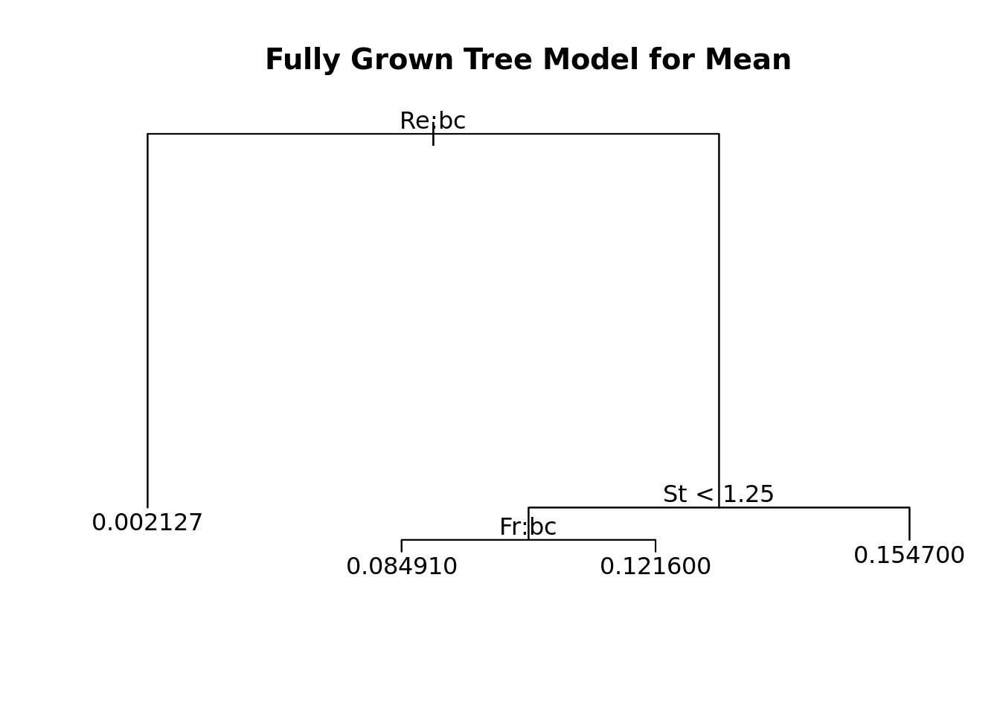

STA325 Case Study
Quick Input Variables Transformations
# A tibble: 3 × 4
Re n...2 Fr n...4
<dbl> <int> <dbl> <int>
1 90 31 0.052 36
2 224 39 0.3 23
3 398 19 Inf 30Reynold’s and Freyman’s numbers are non-continuous as there is only three buckets for the numbers. Therefore I am going to make them a categorical variable to help interpretability.
Inference
Stokes Number St
Stoke’s Number quantifies the particle’s characteristics i.e. it’s size and density. Let’s see how this parameter effects the distribution of the final turbulent space. If we look at some visualizations, we can see it has a rather weak association with the output variables:

In fact, when we fit SLR models with it as an input and the respective central moments as the output, none of the relationships come up as statistically significant for an alpha level of 0.01 .
Reynold’s Number Re
Reynold’s Number, Re in our data, is a number that quantifies the initial fluid turbulence of the system.
Mean Model
| Estimate | Pr(>|t|) |
|---|---|
| 0.1120959 | 0 |
| -0.1091886 | 0 |
| -0.1117449 | 0 |
Rehas a statistically significant relationship with the outputting mean of the distribution for each of its levels.Rehas an inverse relationship with the mean of the resulting distribution.
Variance Model
| Estimate | Pr(>|t|) |
|---|---|
| 265.3472 | 0.0000000 |
| -265.2103 | 0.0000078 |
| -265.3418 | 0.0001693 |
Rehas a statistically significant relationship with the outputting variance of the distribution for each of its levels.It is clear to see that
Rehas an inverse relationship with thevarianceof the resulting distribution. In other words, a higher Reynold’s number results in a lower varied distribution.This follows our intuitition that when a gravitational force is higher, clusters will form at a higher rate resulting in a lower variance number.
Prediction
Simple Linear Regression
| Mean | Variance | Skewness | Kurtosis |
|---|---|---|---|
| 0.000218 | 37239.52 | 2.655954e+12 | 1.899136e+20 |
It is clear that the using a Simple Linear Regression model to predict anything but the mean is not a good idea as the performance is not good. Nonetheless it serves as a good baseline for predicting further complex models.
Polynomials

The optimal degree polynomials for predicting mean, variance, skew, and kurtosis are all 2 for Stokes Number.
Using 2nd degree polynomial models while also predicting the moments with Froud’s and Reynolds’ Numnbers, we get lower MSE’s for all four moments, however these MSEs are still outrageously high for skew and kurtosis, indicating that using polynomials would also not be the best way of predicting the moments.
Interaction Effects (to-do)
Estimate Std. Error t value Pr(>|t|)
(Intercept) 0.108580531 0.002377907 45.662236 5.265113e-57
ReMedium -0.103060131 0.002987389 -34.498397 3.546585e-48
ReHigh -0.106709512 0.003603124 -29.615831 1.743279e-43
FrMedium -0.035778301 0.003540488 -10.105471 1.048667e-15
FrInfinity -0.038678957 0.003219341 -12.014556 3.031953e-19
St 0.024312829 0.001744268 13.938697 1.233637e-22
ReMedium:FrMedium 0.028831079 0.003657032 7.883737 1.837273e-11
ReMedium:FrInfinity 0.033657145 0.003705031 9.084172 9.212342e-14
ReHigh:FrInfinity 0.034293911 0.004051186 8.465154 1.413955e-12
ReMedium:St -0.027399550 0.001938283 -14.135990 5.685515e-23
ReHigh:St -0.025833618 0.002505996 -10.308724 4.336296e-16
FrMedium:St 0.008944036 0.002379658 3.758539 3.333752e-04
FrInfinity:St 0.005955800 0.001995202 2.985061 3.812474e-03Splines
Trees
Random Forests
Evaluating Our Models
TODO:
Splines, (Natural, Cubic…), Tree based model